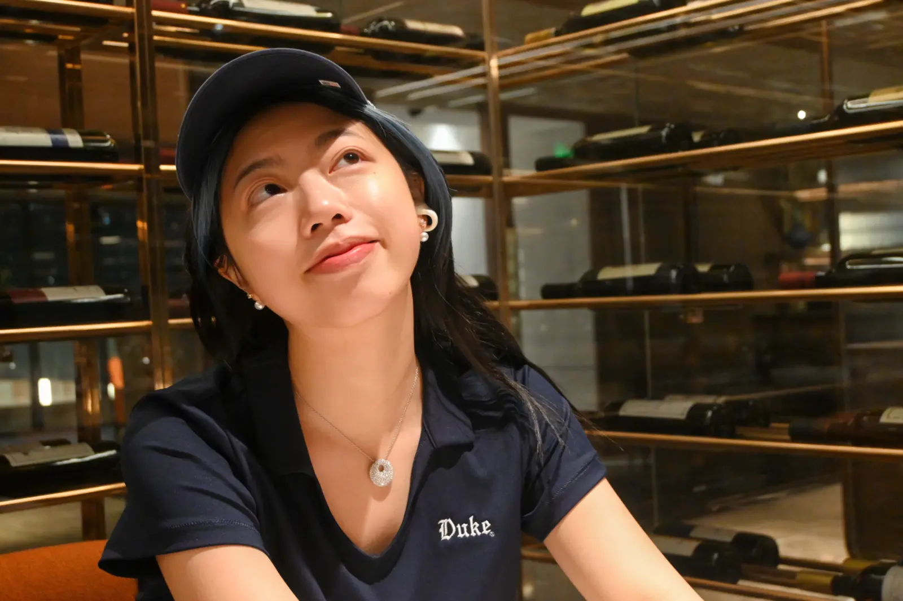

Neural Dynamics
& Memory
How population dynamics support memory maintenance, consolidation, replay, and behavioral variability.
Attractors · Neural fields · Circular statisticsComputational scientist · Singapore
Computational Neuroscience · NeuroAI · Dynamical Systems · Machine Learning
Understanding how intelligence unfolds through dynamics.
I use mathematical models and machine learning to study memory, adaptive behavior, and intelligent systems.
Hippocampal systems
Memory, replay, and continuous neural representations
Explore research ↗The brain is a thematic navigation map—not a claim that complex human activities belong to single regions.
One research program, three connected lenses
My work asks how structured interactions give rise to memory, robust behavior, and meaningful representations—across brains and artificial systems.
How population dynamics support memory maintenance, consolidation, replay, and behavioral variability.
Attractors · Neural fields · Circular statisticsHow salience, surprise, intrinsic motivation, replay, and homeostasis might inform more adaptive agents.
Biological principles · Agent learning · MechanismsHow symmetry, invariance, topology, and system structure can make learning more robust and interpretable.
Equivariance · Validation · ReliabilityThis sketch echoes the continuous-attractor systems I study. Perturb the activity field and watch recurrent dynamics recover a coherent representation.
Move or tap to perturb
Selected projects with their research question, method, contribution, and evidence—not just their title.
Does replay merely strengthen memories—or can its timing and neural overlap determine whether similar memories blend or separate?
Continuous attractors · neural fields · circular statistics · bootstrap & permutation inference · MATLAB · Python
Can geometric consistency under coordinate-frame transformations provide a lightweight, interpretable signal for online robotic fault monitoring?
SE(2) equivariance · anomaly detection · robotic control · locked validation · PyTorch · Python
How do network regimes govern transitions among stable recall, drift, and memory loss?
Attractor networks · dynamical mean-field theory · nonlinear dynamics · reproducibility · MATLAB
Led a five-member team across 150+ multi-trial CO₂ time series, comparing nonlinear ODE, LSTM, and tree-based models.
17–24% improvement over ODE baselinesLed multiscale diffusion-gradient and degradation modeling within a 12-member interdisciplinary team.
Silver Medal · >60% variance explainedFounded a project connecting blood-flow heatmaps, PDE-based diffusion, and multimodal representations of pain.
Top-tier seed fundingThese values indicate experimental scope and methodological care. They are entry points to protocols, uncertainty, and reproducible evidence—not substitutes for scientific judgment.
Co-first author, listed first · Submitted to Robotics and Autonomous Systems
Code, protocols, simulation outputs, and analysis.
Education, research experience, projects, and methods.
MSc Biomedical Informatics
Analytics Track
BS Applied Mathematics & Computational Science
BA Interdisciplinary Studies
Machine learning · probability & statistics · linear algebra · ODEs & PDEs · dynamical systems · computational neuroscience · cognitive neuroscience · numerical analysis
Chancellor’s Scholarship · Dean’s List with Distinction, Top 10% · National First-Class Athlete · Royal Academy of Dance A2 Distinction · DKU Athletic Champion, 2022 & 2023

Between models and lived experience.My path into computational neuroscience began with applied mathematics and a fascination with how simple local rules can produce complex, adaptive behavior. I now work across modeling, machine learning, and neuroscience to connect mechanistic understanding with capable intelligent systems.
Outside research, dance, athletics, travel, and photography shape how I think about disciplined practice, observation, adaptation, and intelligence in the body.
Enter life gallery ↗I’m interested in PhD, research-assistant, and collaborative conversations across computational neuroscience, NeuroAI, neural dynamics, memory, adaptive agents, geometric learning, and research-oriented machine learning.
Intended PhD timeline · Fall 2027 entry
yuanfei.hu@u.nus.edu ↗